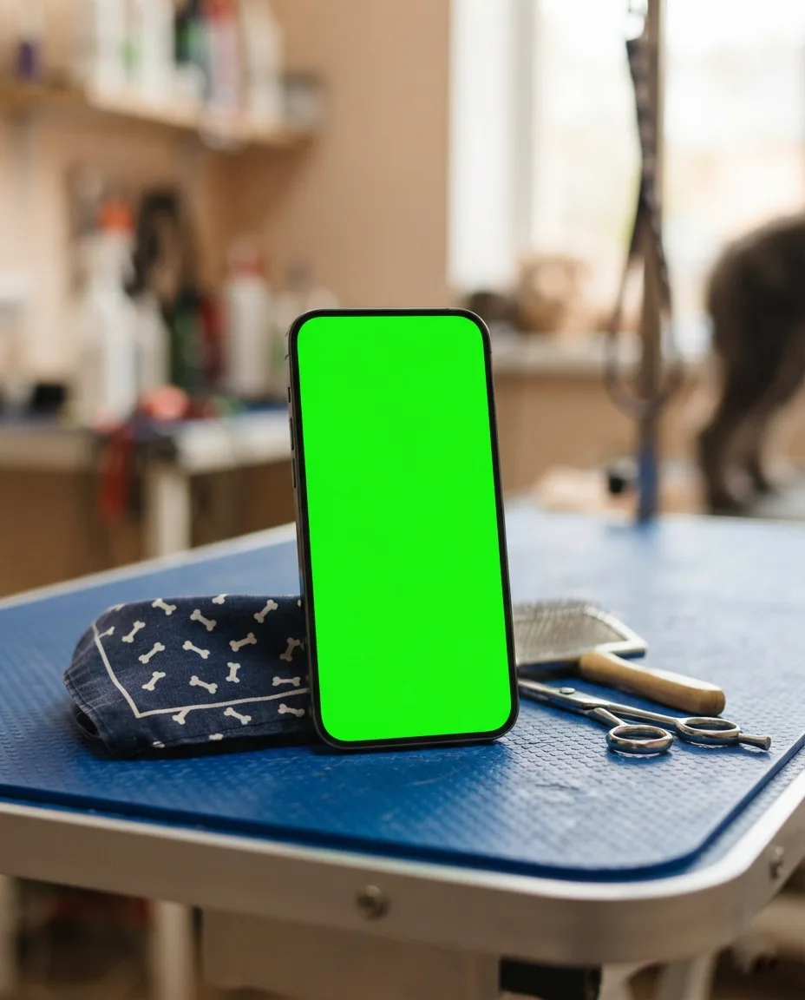
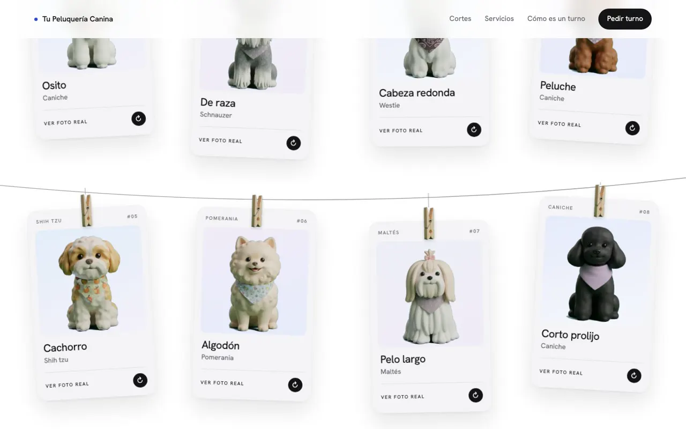
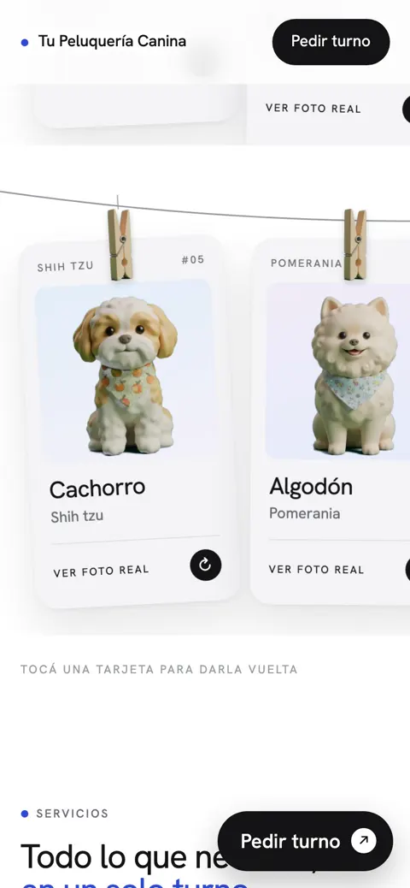
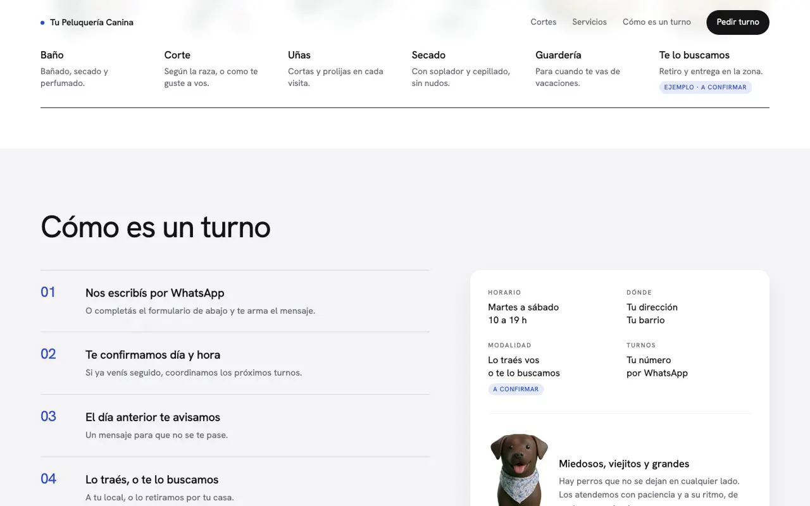
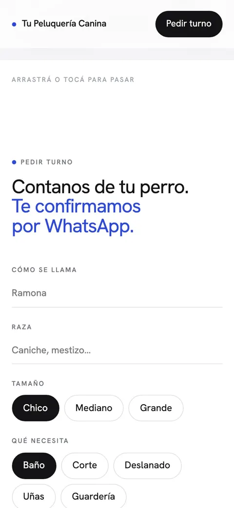
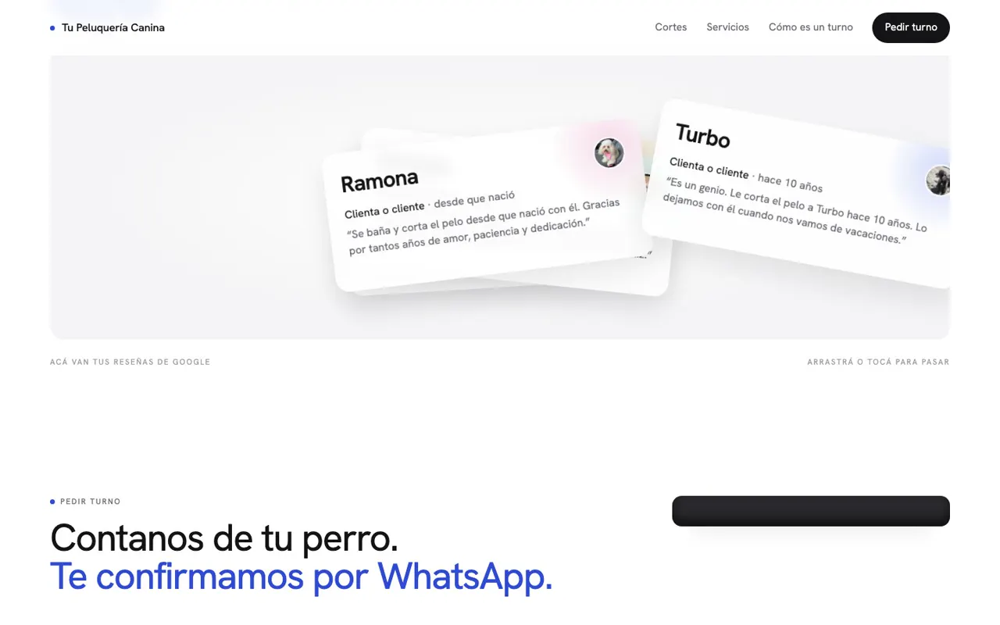

- Concepto · no encargado
- Mascotas
- 2026
Peluquería canina.
Turnos por WhatsApp e ilustraciones 3D hechas con IA para cada corte. Esta es la versión de muestra, sin los datos del local.
Ver el sitio
Lo que vi
Una peluquería canina de barrio con 5,0 en Google, sin web ni redes: todo por WhatsApp. Casi todas las reseñas nombran a la misma persona, y las fotos que había no mostraban bien los cortes.
La idea
«Tu perro ya lo conoce.»
Una sola persona, las mismas manos hace diez años. Los cortes cuelgan de una soga con broche, como los pañuelos con los que salen los perros; cada tarjeta se da vuelta y muestra el corte en el perro real. El turno sale como un ticket impreso y abre WhatsApp con el mensaje armado.
Por dentro





Cómo usé IA
| Herramienta | Para qué | Lo que corregí a mano |
|---|---|---|
| Gemini | Veinte ilustraciones 3D de perros, una por corte, a partir de las fotos reales. | Las recorté con un script: fondo verde y marca de agua afuera. |
| Claude Code | El turno: formulario, ticket impreso y mensaje de WhatsApp armado, con precio y duración según el tamaño. | Al enviar, el formulario queda vacío. |
| Script de muestra | Arma esta copia para mostrarla a otras peluquerías. | Falla si queda cualquier dato del local original. |
En números
- Ilustraciones 3D
- 20
- Cortes en la soga
- 8
- Pasos del turno
- 6
- KB de la página publicada
- 980
La misma página, sin datos, se usa para ofrecerla a otras peluquerías del rubro.